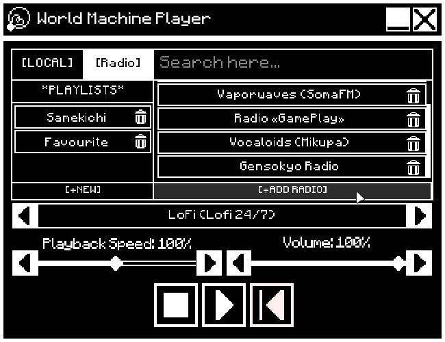
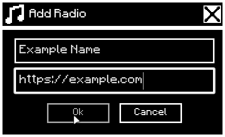
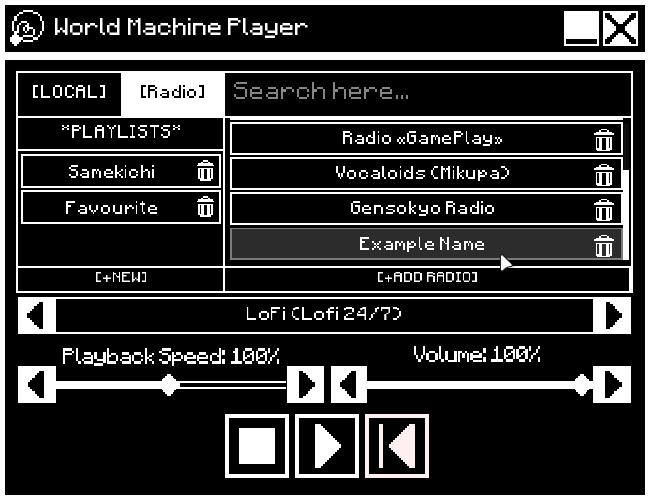
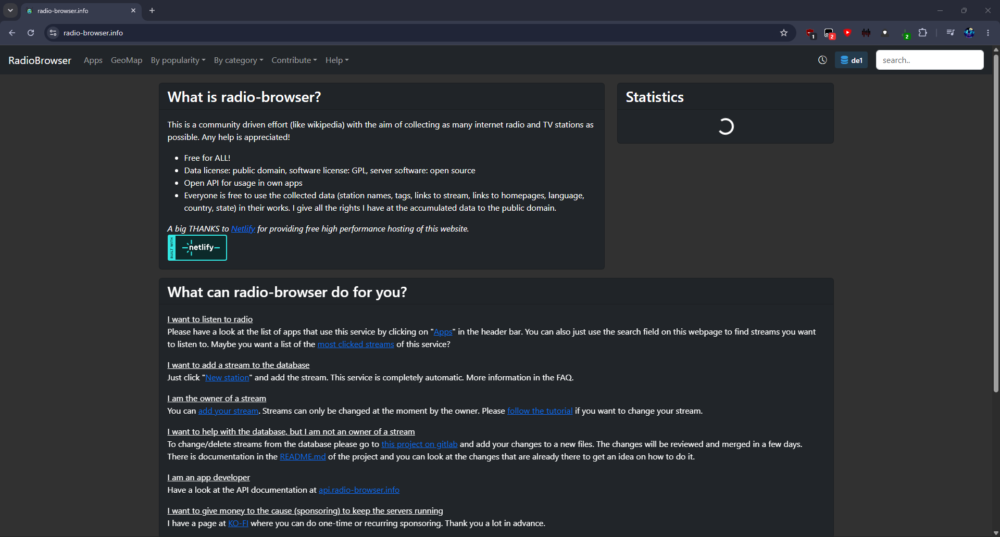
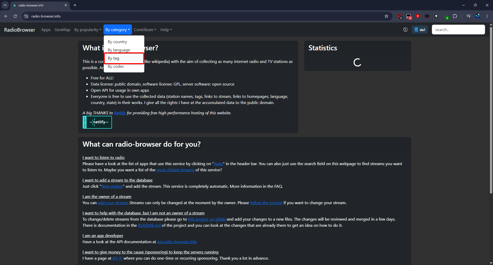
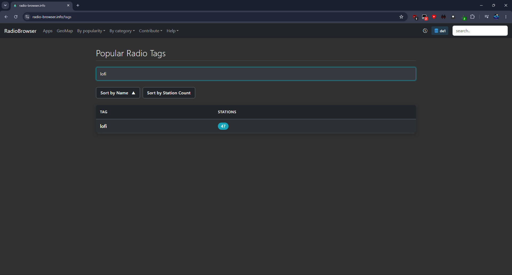
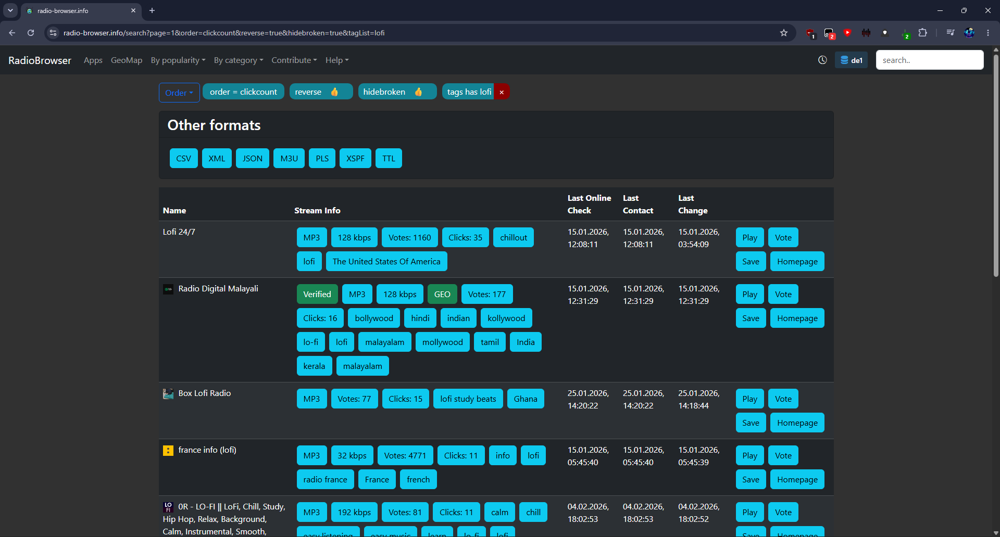
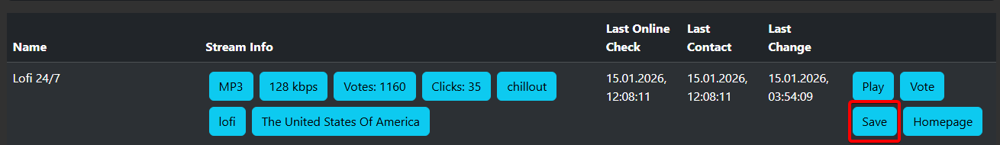
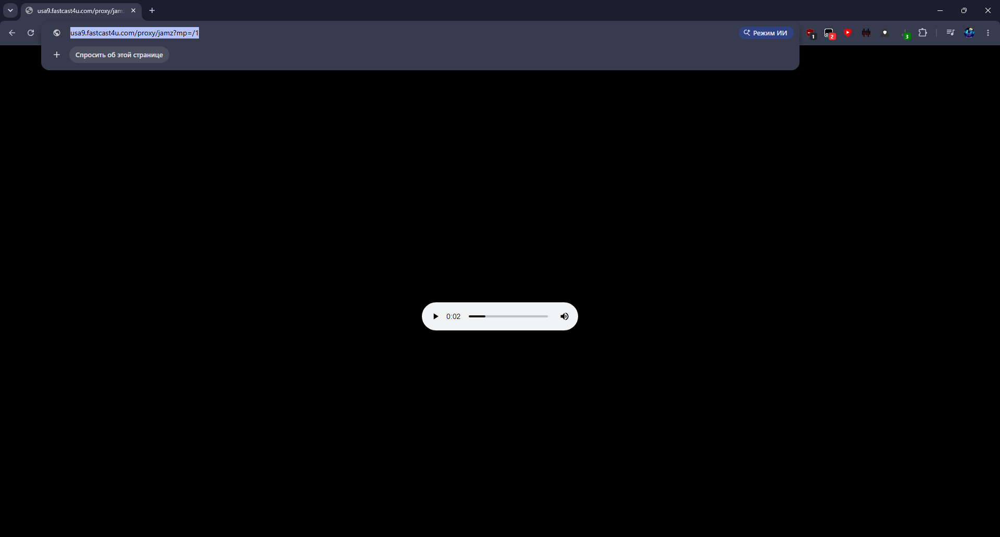

Помощь
Как добавить радиостанции
World Machine Player умеет воспроизводить интернет-радио. Добавь станцию по имени и URL потока — ниже пошаговая инструкция для плеера и для поиска ссылок на radio-browser.info.
World Machine Player
Добавление станции в плеере
- Открой вкладку Radio в плеере.
- Нажми кнопку [+ADD RADIO].
- В диалоге заполни поля Name (название) и URL (ссылка на поток).
- Подтверди добавление — станция появится в списке, её можно выбрать и слушать.



radio-browser.info
Где взять URL радиостанции
radio-browser.info — открытый каталог интернет-радио. Найди станцию с потоком в формате MP3 и скопируй прямую ссылку.
- Открой radio-browser.info.
- Перейди в раздел By category → By tag или воспользуйся поиском.
- Найди интересующий тег, например
lofi, и открой список станций. - Выбери станцию с тегом MP3 в строке списка.
- Нажми кнопку Save в строке станции.
- Браузер откроет страницу потока — скопируй URL из адресной строки (например,
https://usa9.fastcast4u.com/proxy/jamz?mp=/1). - Вставь скопированный URL в поле URL при добавлении радио в World Machine Player.






Если станция не играет, проверь формат (MP3) и что ссылка скопирована полностью из адресной строки после нажатия Save.
На главную